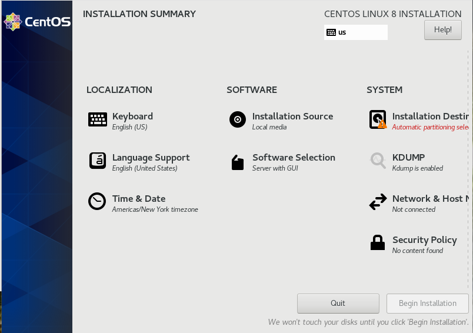
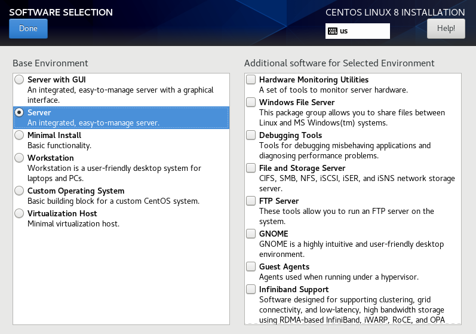

Linux配置和管理
文件管理
在Linux/UNIX中，所有的对象都被视为文件，包括普通文件、目录、设备、套接字。
文件夹
xxxxxxxxxxpwddirname file # parent directory
pwd列出正在工作的目录(Print Working Directory)，用于显示你当前所处的目录名。pwd命令总是返回你当前所处的目录的完全路径名。
dirname返回查询文件的父目录（从文件路径中截取）。
xxxxxxxxxxcd [dir_name]切换工作目录（change directory）。不带任何参数时，将把你送回自己的用户主目录中（等效于
cd ~）。..表示父目录。登录完成后，工作目录为用户主目录的路径名。
xxxxxxxxxxmkdir [options] dir_name创建文件夹（创建的文件夹应该不存在）。
在每一个新的子目录中，均包含两个标准的项目：
.代表当前目录和..代表父目录。选项：
-m：可用来创建一个带有特定权限的子目录。-p：父目录不存在的情况下首先创建父目录。
xxxxxxxxxxrmdir [options] dir_name ...删除文件夹。
dir_name不能为当前工作目录（即要在父目录中删除子目录）。被删除的子目录必须为空目录（即只包含.和..）且拥有对该目录的写权限。
-p：一次删除多个目录xxxxxxxxxxrmdir –p dir1 dir2 dir3
显示目录中的项目
列表显示
xxxxxxxxxxls [options] [dir_name]文件过滤选项
-a：显示所有文件（包括以.开头的文件（夹）），-A仅忽略.和..；
-R：递归显示所有子目录的内容；
-d：只显示目录条目的信息；
文件信息选项
-l：列表显示目录中文件的详细信息，与其他排序方式组合使用时则显示相应的排序字段；-g与-l相似但不显示文件所有者，-o不显示用户组；
文件类型信息：
-表示普通文件（f）；d目录文件；b块设备文件例如磁盘；c字符设备文件，p命名管道（FIFO） ；l符号链接；s套接字（socket）；
--author：显示文件创建者；
-n：显示数字形式的用户和用户组ID；
-i：inode序号将列在第一列；
--time-STYLE：时间显示格式，包括：full-iso（2020-03-07 15:07:15.542112573 +0800）、long-iso（2020-03-07 17:34）、iso（03-07 15:07）、locale（Mar 7 15:07）或+FORMAT；
--full-time：显示完整时间，等价于-l --time-style=full-iso；
-h：显示更加友好的文件长度信息（1K 234M 2G，等价--human-readable）；
-s：显示文件占用的磁盘容量；
--block-size=SIZE：K,M,G,T,P,E,Z,Y （powers of 1024）或 KB,MB,... （powers of 1000）
排序选项
--time=WORD：WORD=none(-u),size(-s),time(-t),version(-v),extension(-X)，未声明排序选项时，默认按文件名排序。-c：按ctime（指文件的inode信息被改变的时间）排序；-u：按访问时间排序；-t：按修改时间排序，优先级低于-c和-u；
-r：反向排序；
查看目录树
xxxxxxxxxxtree -L <n> path # not built-in-L <n>：搜索深度；
文件信息
xxxxxxxxxxfile <path/to/file>date -r <filename> [+"%Y%m%d"] # get file moodified time返回文件的信息。
普通文件
移动和复制
xxxxxxxxxxcp file /path/filecopymv file /path/newname如果目标路径上存在与源文件（夹）同名的文件夹，则将内容复制/移动到该同名文件夹下；否则，将源文件（夹）复制/移动到目标路径。
目标路径所在的父目录必须存在，cp和mv不会自动创建路径上的目录。
批量重命名：
xxxxxxxxxxrename 's/pattern/replace/' FILESpattern为perl正则表达式，文件名FILES支持通配符（*.txt）。
使用需注意，原始的
rename不会检查已有文件而直接覆盖。
删除文件
xxxxxxxxxxrf [-rf] file # can use wildcard使用
-rf递归删除非空文件夹。
文件链接
硬链接（hard link）：是对原文件的引用（引用同一个inode，在inode中计数），与原文件等价（即拥有相同访问权限）。删除硬链接将减小inode计数，到inode计数为0时删除文件。硬链接仅支持在同一文件系统。
符号链接（symbolic/soft link）：保存到目标文件（夹）的路径（或相对路径），访问符号链接将跳转到目标文件（夹）。符号链接是一个独立的文件（具有相应的inode节点），因此具有独立的文件权限。删除原文件后，符号链接失效。符号链接支持跨文件系统。
创建链接
xxxxxxxxxxln -s /file/path /symbol/path # symbolic link: 目标文件必须为绝对路径ln -d /dir/path /symbol/path # hard link 目录ln /file/path /symbol/path # hard link file网络文件
主机之间复制文件
scp命令(secure copy)用于Linux之间复制文件和目录，是linux系统下基于ssh登录进行安全的远程文件拷贝命令。scp是加密的，scp是 rcp (不加密的)加强版。
xxxxxxxxxxscp [options] file user@dest_host:file # local to remotescp [options] user@src_host:file file # remote to local
-P：指定远程服务器端口号。注意：使用
scp命令要确保使用的用户具有可读取远程服务器相应文件的权限，否则scp命令是无法起作用的。
scp可以在源与目的主机以外的第三台主机执行，只需保证源与目的主机间有相应地读写权限。
文件权限
修改用户访问文件的权限：
xxxxxxxxxxchmod [ugoa] [+-=] [rwxXst]ugoa分别代表文件所有用户，文件同组用户，其他用户和所有用户；
+-=表示增加、删除和设置权限；
权限模式：
| 标识 | 说明 | 标识 | 说明 | 标识 | 说明 |
|---|---|---|---|---|---|
r | 读文件 | w | 写文件 | x | 访问/执行 |
s | t | X |
修改文件的所有者/组：
xxxxxxxxxxchown -hR root:staff FILE
查找文件
xxxxxxxxxxwhich <command>command -V <command>从系统环境变量中查找文件并返回绝对路径。
查找目录中的文件
xxxxxxxxxxfind [-HLP][-D debugopts][-Olevel][start_dir...][expression]start_dir表示查找路径，可以使用绝对路径，也可以使用相对路径，可以同时指定多个目录；如果没有指定，则默认为当前目录。
选项（Option）
选项控制find访问文件系统的行为。
-H，-L和-P（默认）控制处理符号链接的行为。
-P表示不解析任何符号链接；-H表示除了命令行提供的文件名外，不解析其他符号链接。如果符号链接不能被解析，则返回符号连接本身的信息；-L表示在可能的情况下解析符号链接，反之返回符号链接自身的信息。（-followdeprecated）
-D debugopts：输出诊断信息。
-Olevel：查询优化。默认首先执行基于文件名的表达式（-name，-regex等）；其次执行-type或-xtype的表达式（通过readdir()读取文件类型）。
读取上述选项之后，检查后续参数是否为文件/路径，直到以-、(、!开始的参数（也可以使用--声明选项参数的结束）。剩余参数为控制搜索行为的表达式。
表达式（Expression）
表达式用于控制如何匹配文件以及对匹配文件的操作。表达式可以包含以下内容：
Tests：测试文件属性，返回true|false；Actions：对匹配结果执行操作，根据操作结果返回true|false；如果表达式没有包含操作，则默认为-print；Global options：全局选项，总是返回true；Positional options：仅影响其后的测试或操作，总是返回true；Operator：将表达式中多个内容连接起来：-o（逻辑OR）、-a（逻辑AND）；表达式内容之间默认使用-a连接；可以使用()声明优先级。
全局选项
-d,-depth：先处理文件夹中的内容，在处理文件夹本身；-maxdepth,-mindepth LEVEL：指定搜索的层级，0表示起始点本身；-mount, -xdev：不搜索挂载的其他文件系统目录；-help,--help,--version：帮助、版本信息。
位置选项
-daystart：计算时间时从今天开始，而非24小时前算起。影响其后的测试条件-amin,-cmin,-mmin,-atime,-ctime和-mtime。-regextype TYPE：默认为emacs。-regextype egrep在CentOS 7 上不支持{}。
测试
| 表达式 | 说明 |
|---|---|
-name PATTERN | 查找文件名匹配PATTERN的文件，可以使用通配符*，？,[]。 |
-regex PATTERN | 使用正则表达式匹配文件。文件名以./开头的完整相对路径，需要在正则表达式前添加.*以匹配前缀； |
-path PATTERN | 从搜索路径开始的完整文件名（非绝对路径）与PATTERN进行匹配（-wholename）。 |
-atime [+-]N -ctime [+-]N -mtime [+-]N | 判断最近访问(-a)，状态变化(-c)，修改(-m)时间：如果参数为 N，表示时间在N天之内（0表示0~24小时，1表示24~48小时，…） |
-amin [+-]N | 时间单位为min（类似地-cmin，-mmin） |
-anewer FILE | 测试最近访问时间是否比FILE更近（-cnewer,-mnewer）。 |
-used [+-]N | 在文件状态改变N天（+N,-N）之内文件被访问过。 |
-empty | 测试文件或文件夹是否为空。 |
-size n[u] | 文件大小：单位u=cwbkMG: |
-fstype TYPE | 测试文件所在的文件系统的类型是否为TYPE。 |
-uid [+-]N | 文件的用户ID（组ID-gid）是否为N（或+N,-N）。 |
-user NAME | 文件的用户名（组名-group）是否为NAME（允许使用ID）。 |
-nouser | 文件的用户ID（组ID-nogroup）没有对应的用户（组）。 |
-lname PATTERN | 符号链接所指向的文件的文件名是否与PATTERN匹配。 |
-perm pmode | 文件的权限是否与pmode匹配，pmode可以是符号或数字模式，例如：-perm 664。直接指定单项权限 -readable、-writable、-executable。 |
-type <c> | 文件类型： bcdpfls |
-xtype c | 除符号链接以外，与-type作用一致； |
-inum [+-]N | rarely useful. |
-samefile NAME | 文件与NAME为同一个文件。 |
-links [+-]N | File has n hard links. |
匹配文件名的测试命令前添加
i（例如-iname）为忽略大小写版本。 通配符需要使用引号包围以防被shell展开。 参数如果为+N，则表示大于N，如果为-N则表示小于N。
运算符
| 运算符 | 表达式 |
|---|---|
() | (EXPR) |
! -not | !EXPR –not EXPR |
-a -and | EXPR1 –a EXPR2 EXPR1 –and EXPR2 |
-o -or | EXPR1 –o EXPR2 EXPR1 –or EXPR2 |
, | EXPR1, EXPR2 |
动作
| 命令 | 说明 |
|---|---|
-print, -print0 | print0会在文件名结尾追加“null”。 |
-fprint FILE-fprint0 FILE | 打印完整文件名到FILE。如果文件不存在则创建文件； 如果存在，则文件内容被删除； 即使没有输出内容，该文件仍然会被创建。 |
-ls-fls FILE | 以ls -dils格式打印到标准输出。-fls输出到文件。 |
-printf FORMAT-fprintf FILE FORMAT | 位宽和精度说明类似于C语言的printf(man find)。 |
-execdir command-exec command | -execdir将其后直到;的所有内容视为command，同时将其中的“ {}”替换为查找结果的文件名。command中的特殊字符需要使用“\”或“'”以防被shell展开。 |
-execdir command{}+-exec command{}+ | 命令末尾的“{}”展开为匹配文件名称的列表； |
-okdir command-ok command | 询问用户是否执行命令 |
-delete | 删除成功返回真；如果失败，生成错误信息； |
查找文件内容
xxxxxxxxxxgrep [option] PATTERN [file1 file2 …]
-作为文件名代表标准输入。
正则表达式类型
| 选项 | 说明 |
|---|---|
-E, --extended-regexp | 使用扩展正则表达式（ERE）。 |
-G, --basic-regexp | 使用基本正则表达式（ERE）。 |
-P, --perl-regexp | 使用Perl正则表达式。 |
匹配模式(pattern)
| 选项 | 说明 |
|---|---|
-e,--regexp=PATTERN | 使用PATTERN进行匹配。由于PATTERN直接提供在命令行，该选项可以省略。该选项可以用于提供多个匹配模式，而命令行中只能提供一个匹配模式。 |
-f,--file=FILE | 从文件FILE中读取PATTERN。 |
-i,--ignore-case | 忽略大小写 |
-w,--word-regexp | 匹配整个单词 |
-x,--line-regexp | 匹配整行 |
执行控制
| 选项 | 说明 |
|---|---|
-m,--max-count=NUM | 在NUM次匹配之后停止 |
--binary-files=TYPE | 文件类型：binary，text或without-match |
-a, --text--binary-file=text | |
-I--binary-file=without-match | 表示不查找二进制文件。 |
-d,--directories=ACTION | 如何处理文件夹：read，recurse，skip |
-r, --recursive | --directories=recurse |
-R | 递归，但不追踪符号链接。 |
-D,-devices=ACTION | 如何处devices，FIFOs和socket：read，skip |
--include=FILE_PATTERN | 搜索文件的文件名需要匹配FILE_PATTERN，FILE_PATTERN可以包括通配符“*”“?”。 |
--exclude=FILE_PATTERN | 排除文件名与FILE_PATTERN匹配的文件。 |
--exclude-from=FILE | 跳过与FILE中的模式匹配的文件 |
--exclude-dir=PATTERN | 跳过与PATTERN匹配的文件夹 |
-v, --inver-match | 选择没有匹配的行 |
输出控制
| 选项 | 说明 |
|---|---|
-b,--byte-offset | 在输出的匹配行前添加匹配行相对文件起始位置的字节数。 |
-n,--line-number | 在输出的匹配行前添加行号 |
-H,--with-filename -h,--no-filename | 在输出的匹配行前添加文件名（从起始位置开始的相对路径，默认）。-h不输出文件名。 |
-o, --only-matching | 只输出匹配部分 |
-q, --quiet, --silent | 不输出普通消息 |
-s, --no-message | 不输出错误消息（要输出其他消息） |
-L,--files-without-match | 仅输出没有发生匹配的文件的文件名。 |
-l,--files-with-matches | 仅输出发生匹配的文件的文件名（从起始位置开始的相对路径）。 |
-c, --count | 仅输出一个文件中匹配的行数。 |
-B, --before-context=N | 输出匹配行及其之前的N行内容 |
-A, --after-context=N | 输出匹配行及其之后的N行内容 |
-C, --context=<NUM>-<NUM> | 输出匹配行及其前后的NUM行内容 |
--color[=WHEN]--colour[=WHEN] | 使用颜色高亮匹配内容，WHEN='always','never', 'auto'。 |
应用
查找具有给定内容和文件名的文件：
xxxxxxxxxxgrep -rl 'main' --include='*.cpp' ./ # 输出匹配文件的文件名grep -rn 'main' --include='*.cpp' ./ # 输出匹配行的行号和内容高亮查找结果：
xxxxxxxxxxfind ./ -name '*.tar.gz' | grep --color '.tar.gz'打印查找到文件的详细信息。
xxxxxxxxxxfind ./ -name '*.tar.gz' -exec ls -lh {} ';' 在过滤文件中查找内容：
xxxxxxxxxxfind ./ –name '*.cpp' –exec grep -Hn 'main' {} ';'find ./ -name "*.log" | xargs grep –Hn 'ERROR'grep与find同时使用时，默认不会输出文件名（添加-H选项），也不会高亮文本（使用--color选项）。
硬件管理
CPU
xxxxxxxxxxlscpu # summarycat /proc/cpuinfo # detailssudo dmidecode --type processor # detailssudo lshw -C CPU # not installed on CentOSnproc # number of process unit
cpuid、inix、hwinfo（默认未安装到系统）；hardinfo（图形界面）。
xxxxxxxxxxcat /proc/cpuinfo | grep name | cut -f2 -d: | uniq -c# 8 Intel(R) Xeon(R) CPU E5410 @ 2.33GHz## (CPU with 8 logical core)cat /proc/cpuinfo | grep 'physical id' | uniq -c# 4 physical id : 0# 4 physical id : 1### (2 physical CPU with 4-core)
内存
xxxxxxxxxxfree -h # summarycat /proc/meminfo # detailsvmstat -sRAM信息
xxxxxxxxxxsudo dmidecode -t 17磁盘
磁盘信息
列出（文件或目录所在）文件系统使用情况。
xxxxxxxxxxdf [-ahikHTm] [目录或文件名]
-h：以合适的单位显示数据，提高可读性。
列出文件或目录的磁盘占用量（disk usage）：
xxxxxxxxxxdu [-ahskm] 文件或目录名称-c, --total
-h, --human-readable
-s, --summarize
xxxxxxxxxxsudo fdisk [-l] [device_name]sudo fdisk [-l] [device_name] | grep ntfs # 筛选文件系统未添加
device_name时，列出系统内所有存储设备（/dev）的分区（partition）信息。
xxxxxxxxxxsudo blkid列出存储设备信息。
格式化
xxxxxxxxxxmkfs [-t fstype] 装置文件名mkfs.fstype options /dev/namefstype文件系统类型，例如 ext4, ntfs, fat等(系统有支持才会生效)。
mke2fs：创建ext2/ext3/ext4文件系统，对应命令：mkfs.ext2|3|4。ext文件系统的i-node节点总数在文件系统创建后不能改变，调整文件系统容量将按比例调整inode数量（bytes-per-inode）。
exfat格式支持需要安装exfat-fuse和exfat-utils包。
磁盘检验
xxxxxxxxxxfsck [-t 文件系统] [-ACay] 装置名称
用来检查和维护不一致的文件系统。若系统掉电或磁盘发生问题，可利用fsck命令对文件系统进行检查。
磁盘挂载与卸除
xxxxxxxxxxmount [-t 文件系统] [-L Label名] [-o 额外选项] [-n] /dev/dev_name /mnt/mnt_nameumount [-fn] [/dev/dev_name | /mnt/mnt_name]mount -t auto /dev/cdrom /mnt/cdrom # 挂载CD挂载磁盘的目标文件夹必须存在。
虚拟磁盘
LVM
Logical Volume Management, gives users the power to pool and abstract the physical layout of component storage devices, to gather existing storage devices into groups and allocate logical units from the combined space as needed.
LVM存储信息
显示系统中的兼容LVM的存储设备：
xxxxxxxxxxsudo lvmdiskscan显示可作为LVM组成单元的物理卷（Physical Volumns）：
xxxxxxxxxxsudo lvmdiskscan -l # pvscan, pvs, pvdisplay显示系统中的物理卷组信息：
xxxxxxxxxxsudo vgscan # vgs, vgdisplay显示系统中的逻辑卷：
xxxxxxxxxxsudo lvscan # lvs, lvdisplay [-m]管理LVM存储
从原始磁盘创建LVM物理卷，注意将磁盘上原有数据备份，加入LVM管理后将覆盖原有数据。
A header is written to storage devices to mark them as free to use as LVM components.
xxxxxxxxxxsudo pvcreate /dev/sda /dev/sdb ...将物理卷创建为卷组，通常只需要一个卷组并在此之上创建虚拟卷。
xxxxxxxxxxsudo vgcreate volume_group_name /dev/sda /dev/sdb ...向卷组中增加物理卷：
xxxxxxxxxxsudo vgextend volume_group_name /dev/sdb创建虚拟卷：
xxxxxxxxxxsudo lvcreate -L 10G -n VolumnName LVMVolGroup # 绝对容量sudo lvcreate -l 100%FREE -n VolumnName2 LVMVolGroup # 相对容量虚拟卷的底层物理磁盘分配方案支持线性（
linear，默认）、striped（RAID 0）、raid1等。
虚拟卷容量调整，使用-L选项增加/减少绝对容量，或用-l选项增加相对容量。
xxxxxxxxxxsudo lvresize -L +5G --resizefs LVMVolGroup/vol_namesudo lvresize -l +100%FREE --resizefs LVMVolGroup/vol_nameRAID
- How To Use LVM To Manage Storage Devices on Ubuntu 18.04.
- How To Create RAID Arrays with mdadm on Ubuntu 16.04.
显示设备
查看显示设备：
xxxxxxxxxxlspci | grep -i vgasudo lshow [-short] -c CLASS # list hardware, CLASS for class/descriptionsudo lspci -v -s 03:00.0sudo dmidecode |grep -A16 'System Information$' # 系统和主板信息sudo dmidecode | grep "Product Name" # 产品名称
BIOS Information,System Information,Base Board Information,Chassis Information,OEM Information,Memory Controller Information,System Boot Information。
系统配置
系统信息
操作系统
xxxxxxxxxxuname [options]| 选项 | 说明 |
|---|---|
-a, --all | 按以下顺序打印系统信息 |
-s, --kernel-name | 内核名称 |
-n, --nodename | 网络主机名称 |
-r, --kernel-release | 内核发行版本 |
-v, --kernel-version | 内核版本 |
-m, --machine | 机器硬件名称 |
-p, --processor | 处理器类型 |
-i, --hardware-platform | 硬件平台 |
-o, --operating-system | 操作系统 |
系统版本信息
xxxxxxxxxxcat /etc/issuecat /etc/lsb-release cat /etc/os-release lsb_release -cridWSL-Ubuntu中
hostnamectl不可用。
主机名
xxxxxxxxxxhostnamectl # 显示主机信息（主机名、系统名、架构...）hostnamectl set- 'gfs-server-03' # 设置主机名域名映射
xxxxxxxxxxsudo vi /etc/hosts# change <hosts> file192.168.137.11 new-host-name可能需要重启。
日期时间
显示时间
xxxxxxxxxxdatedate +'%H' # %T %c %Fdate -d '7:00:00' +'%s' # parse a date and display itA list of date command field descriptors
| 格式声明 | 含义 | 格式声明 | 含义 |
|---|---|---|---|
%Y | YYYY | %y | yy |
%m | mm | ||
%D | %m/%d/%y | %d | dd |
%x | locale' date | %X | locale's time |
%H | HH(00-23) | %I | hh(01-12) |
%k | *H(0-23), space-padded | %l | *h(1-12),space-padded |
%M | MM(00-59) | ||
%S | SS | %s | 时间戳（秒） |
%j | ddd: day of year | ||
%u | day of week(1-7), 1 is Monday | %w | day of week(0-6), 0 is Sunday |
%W | week of year(00-53), Monday first | ||
%U | week of year(00-53), Sunday first | %V | week of year(01-53), Monday first |
%T | %H:%M:%S |
设置时间
xxxxxxxxxxtimedatectl [status] # 显示系统的日期、时间和时区等信息timedatectl set-time "2012-10-30 18:17:16"date -u [MMDDhhmmCCYY.ss] # print or set datetimedate -s, --set=STRINGtimedatectl set-timezone <Asia/Shanghai>timedatectl list-timezones # 列出已知时区
配置文件
系统中保存了系统范围以及用户范围的配置文件，用于创建Shell环境变量。
在Shell中使用
export命令声明的环境变量，仅在当前Shell及其子Shell中有效。
系统范围
/etc/profile中使用export声明的变量在系统启动时加载，对所有用户有效。运行sudo source /etc/profile使修改后的配置立即生效。由于该文件的修改作用于系统的所有用户，通常不推荐使用。
/etc/environment保存了系统环境变量的赋值表达式，在用户登录时读取。
用户范围
用户目录下的.bashrc文件，登入用户时加载。使用该方法只对当前用户有效，因此对系统影响较小，同时能永久保存修改，因此推荐使用这种方式。
系统引导配置
引导配置文件：
xxxxxxxxxx/etc/default/grub/etc/grub/grub.cfg # auto-generated by grub-update选择默认用户界面：
xxxxxxxxxxsudo systemctl set-default multiuser.target # terminal shellsudo systemctl set-default graphical.target # GUI
添加开机启动项
编辑
/etc/rc.local脚本，并设定可执行权限（sudo chmod 755）适合较短的命令
将启动项的脚本添加到
/etc/init.d目录下，并设置可执行权限xxxxxxxxxxln -s task.sh /etc/init.d/tasksudo chmod +x /etc/init.d/taskxxxxxxxxxxcd /etc/init.dsudo update-rc.d task defaults 95 # execute ordersudo update-rc.d -f task remove # remove the task如果使用需要开机通过
chkconfig设置开机启动的服务，则脚本开头应该包含以下信息：xxxxxxxxxx#！/bin/bash# chkconfig: 2345 20 80# description: Saves and restores system entropy pool \# for higher quality random number generation.chkconfig: 2345 20 80表示这个服务在运行级别2345下运行，20表示开机启动优先权重，80表示关闭优先权重。也可以手动调用
chkconfig添加开机启动服务xxxxxxxxxxchkconfig --add my-service实际上
chkconfig --add命令是将/etc/init.d中的启动脚本软连接到/etc/rc.d/rcx.d（rc0.d ... rc6.d）0-6个运行级别对应相应的目录，都是位于/etc/init.d中脚本的软连接。/etc/init.d/中的脚本，可以通过命令：xxxxxxxxxxservice service-name [start/stop]启动或者关闭（添加到启动脚本中实现自启动，见方法1或）。
将启动任务的脚本放到目录
/etc/profile.d下，系统启动后将自动执行其中的shell脚本。xxxxxxxxxx[Unit]Description=Job that runs your user script[Service]ExecStart=/some/commandType=oneshotRemainAfterExit=yes[Install]WantedBy=multi-user.target
终端配置
配置终端使用的环境变量，包括
PATH：可执行文件的搜索路径LD_LIBRARY_PATH：非标准共享库的搜索路径(UNIX方式)。共享库的寻找和加载是由
/lib/ld.so实现的。ld.so在标准路经(/lib，/usr/lib) 中寻找共享库。Linux通用的做法是将非标准路径加入
/etc/ld.so.conf，然后运行ldconfig生成/etc/ld.so.cache。
xxxxxxxxxxvi ~/.bashrcexport PATH=new_path:$PATH日志
大部分的发行版都内置使用syslog系统日志，常见的日志一般存放在 /var/log 中。
常见的系统日志
| 日志名称 | 记录信息 |
|---|---|
alternatives.log | 系统的一些更新替代信息记录 |
apport.log | 应用程序崩溃信息记录 |
apt/history.log | 使用apt安装卸载软件的信息记录 |
apt/term.log | 使用apt时的具体操作，如package的下载、打开等 |
auth.log | 登录认证的信息记录 |
boot.log | 系统启动时的程序服务的日志信息 |
Consolekit/history | 控制台的信息记录 |
dist-upgrade | dist-upgrade 这种更新方式的信息记录 |
dmesg | 启动时，显示屏幕上内核缓冲信息,与硬件有关的信息 |
dpkg.log | dpkg 命令管理包的日志 |
faillog | 用户登录失败详细信息记录 |
fontconfig.log | 与字体配置有关的信息记录 |
kern.log | 内核产生的信息记录，在自己修改内核时有很大帮助 |
lastlog | 用户的最近一次信息记录。 |
wtmp | 登录信息的记录。 |
btmp | 远程登录信息记录。 |
syslog | 系统信息记录 |
日志一般都是文本文件，可使用 less、cat、more 等工具查看。 wtmp、lastlog是二进制文件，需要使用last和lastlog工具来提取其中的信息。
终端命令记录
xxxxxxxxxxhistroy # 显示历史记录： cat ~/.bash_historyhistory -c # 删除历史记录：rm ~/.bash_history用户登录信息
xxxxxxxxxxwho # 查看当前登录用户who /var/log/wtmp # 查看用户登录历史记录last [username] [-f /var/log/btmp] # 默认读取/var/log/wtmplastlog [-u username] [-t 5] [-b 60]浏览器
xxxxxxxxxx~/.opera/cach4~/.mozilla/firefox/*.default/cache
进程管理
每个会话（session）拥有一个或者多个进程组（process group），每个进程组拥有一个或多个进程（process）。会话中的第一个进程就是这个会话的领导（session leader），会话标识（session id）就用它的进程标识（process id）。
查看进程
xxxxxxxxxxps [options]选项：
| 选项 | 说明 |
|---|---|
-A, -e | 查看所有进程 |
-a | 关联tty的所有进程，除了session leader |
a | 关联tty的所有进程，包括其他用户 |
-d | 除了session leader外的所有进程 |
T | 当前终端上的所有进程 |
x | 没有关联控制终端（tty）的进程 |
-f | 完全信息，包括命令行 |
f | 完全信息，并显示进程树 |
-F | 完全信息，包括附加信息 |
-H | 显示进程层级 |
-l, l | 长格式，BSD长格式 |
H | 将线程视作进程显示 |
-m, m | 在进程之后显示 |
用法：
xxxxxxxxxxps -e | grep proc_name从进程列表中查找包含指定名称（模式）的进程，并输出相应信息。
进程树
xxxxxxxxxxpstree [options]选项：
| 选项 | 说明 |
|---|---|
-A, --ascii | 使用ASCII画线符号 |
-U, --unicode | 使用UTF-8画线符号 |
-h, --highlight-all | 重点显示当前进程及其祖先进程 |
-H PID--highlight-pid=PID | 重点显示给定进程及其祖先进程 |
-n, --numeric-sort | 根据PID对输出排序 |
-l, --long | 不截断长行（自动换行） |
-g, --show-pgids | 显示进程组标识 |
-p, --show-pids | 显示进程标识 |
-s, --show-parents | 显示父进程标识 |
-V, --version | 显示pstree版本信息 |
PID | 进程树其实进程标识，默认为1（init/systemd） |
USER | 仅显示根进程属于当前用户的进程树 |
任务状态
xxxxxxxxxxtop
top命令显示的是你的程序占用的cpu的总数，也就是说如果你是4核cpu那么cpu最高占用率可达400%，top里显示的是把所有使用率加起来。在
top的运行环境中按下键盘的1，显示每个cpu核的状态。
终止进程
杀死单个进程
向进程发送信号使进程终止，默认信号是SIGTERM。
语法：
xxxxxxxxxxkill [-s sigspec | -n signum | -sigspec] pid ...kill -l [sigspec]sigspec表示信号名，signum表示信号值。
选项：
| 选项 | 说明 |
|---|---|
-l, --list [sigspec] | 列出可发送的信号，如果给出信号名（值），则将信号名（值）转换为信号值（名） |
-s sigspec -n signum -sigspec | 指定发送的信号 |
杀死符合名称的所有进程
xxxxxxxxxxkillall [-s sigspec | -sigspec] [-e] [-I] [-g] [-i] [-u user] [-v] [-w] name ...killall –l选项
| 选项 | 说明 |
|---|---|
-l, --list | 列出可发送的信号 |
-s,--signal sigspec -sigspec | 指定发送的信号 |
-e, --exact | 匹配名称 |
-I, --ignore--case | 匹配名称时忽略大小写 |
-g, --process-group | 向进程所属的进程组发送信号 |
-i, --interactive | 在杀死进程前交互式确认 |
-q, --quiet | 如果没有进程被杀死，不输出信息 |
-u, --user | 仅杀死属于给定用户的进程 |
-v, --verbose | 报告信号是否成功发送 |
-w, --wait | 等待所有被杀死的进程结束 |
杀死图形进程
xxxxxxxxxxxkill出现“x”标志的鼠标，点击需要中止的程序即可。
服务
systemd管理器交互命令可以用于管理服务。
xxxxxxxxxxsystemctl {start|stop|reload|restart|kill} <service>systemctl enable --now <service> # 启用服务并立即启动systemctl disable <service> #禁用服务systemctl status <service>systemctl show <service>systemctl list-units此外，
systemdctl还用于控制系统xxxxxxxxxxsystemctl {poweroff|reboot[arg]|suspend|hibernate}
service命令也用用管理服务，在Ubuntu中其实际调用的是systemctl。
网络管理
网络接口
网络接口配置文件：
ifup/ifdown：/etc/network/interfaces
xxxxxxxxxxifconfig ip a
获取本机IP地址
xxxxxxxxxxhostname -I [ | awk '{print $1}'] # get ip_addr as a list
网络服务
xxxxxxxxxxsystemctl restart networking常用网络服务
| 服务名 | 端口 |
|---|---|
ssh | 22 |
http | 80 |
https | 443 |
mysql | 3306 |
webmin | 10000 |
网络状态
语法：
xxxxxxxxxxnetstat [options]选项：
| 选项 | 说明 |
|---|---|
-a | 列出tcp, udp和unix协议下所有套接字连接。 |
-a{t|u} | 只列出TCP/UDP连接 |
-n | 禁用对IP地址/端口的反向域名解析，加快查询速度 |
-l | 只列出监听中的连接 |
-p[e] | 查看连接对应的进程信息（sudo） |
-r | 打印内核路由信息，与route命令输出一样 |
-i[e] | 输出网络接口设备的统计信息； 结合上 -e选项，与ifconfig命令的输出一致 |
-s | 获取网络协议的统计信息 |
用法：
xxxxxxxxxxsudo netstat -anp | grep ESTABLISHED打印 active 状态的连接。
xxxxxxxxxxsudo netstat -anp | grep apache2查看指定服务是否正常运行。
防火墙
防火墙规则
查询规则
xxxxxxxxxxiptables -L FORWARD -t filter -v -n --line-number -x-L <Chain>：指定查看的链（省略链名则查看所有链）；
-t <Table>：指定查看的表（省略则查看filter表）
-n：不反向解析IP地址（显示IP地址而非域名）；
--line,--line-number：显示规则编号；
-v：显示更多信息（分组数、字节数等）；
-x：显示精确的计数，而非经过单位转换的数据；
链名为大写，表名为小写。
管理规则
xxxxxxxxxxiptables -F INPUT # 清空表中的规则iptables -t filter -I INPUT [2] <rules> -j <traget> # 在表首部插入一条规则iptables -t filter -A INPUT <rules> -j <target> # 在表尾部插入一条规则iptables -t filter -D INPUT <rules> -j <traget> # 删除匹配条件的规则iptables -t filter -D INPUT 2 # 删除指定编号的规则添加相同的规则不会覆盖已有规则，可用以下命令修改已有规则的动作：
xxxxxxxxxxiptables -t filter -R INPUT 2 <rules> -j <traget> # 修改指定规则的动作必须指定要修改规则的条件，否则该规则的条件将变为默认值（例如IP将变为
anywhere）。
修改默认策略
xxxxxxxxxxiptables -t filter -P FORWARD DROP黑白名单机制
黑名单：将默认策略设置为ACCEPT；在规则中添加阻止策略。
白名单：将默认策略设置为DROP，在规则中添加允许策略。
默认策略设置为
DROP的缺点：在对应的链中没有设置任何规则时，管理员也会把自己拒之门外；即使对应的链中存在放行规则，当不小心使用"iptables -F"清空规则时，放行规则被删除，则所有数据包都无法进入。所以，如果想要使用"白名单"的机制，最好将链的默认策略保持为"ACCEPT"，然后将"拒绝所有请求"这条规则放在链的尾部，将"放行规则"放在前面，这样做，既能实现"白名单"机制，又能保证在规则被清空时，管理员还有机会连接到主机，示例如下。
自定义链
自定义链仅对应一种类型的表，自定义链中规则配置方式与默认链相同。
xxxxxxxxxxiptables -t filter -N IN_WEB # 创建用于filter表的自定义链iptables -t filter -I INPUT -p tcp --dport 80 -j IN_WEB # 引用自定义链iptables -E IN_WEB WEB #重命名iptables -X WEB # 删除自定义链，需未被引用且不包含任何规则保存规则
通过iptables对规则的修改并非永久生效，当重启iptables服务或者重启服务器以后规则便失效了。如果想要修改永久生效，必须使用service iptables save保存规则，如果误操作了规则但是并没有保存，那么使用service iptables restart命令重启iptables以后即恢复修改前的状态。
目前的发现版多数已用防火墙软件（如
CentOS/firewall、Ubuntu/ufw）代替了iptable-services了，因此使用上述方法需要安装该服务。
xxxxxxxxxxiptables-save # 将防火墙规则导出到标准输出iptables-restore # 从标准输入导入防火墙规则匹配条件
多个条件之间具有AND关系，使用!对条件取反。
基本匹配条件：
xxxxxxxxxx# IP地址-s sip1,sip2 -d dip1-s ip/mask# 协议类型-p tcp # all, tcp, udp, udplite, icmp, icmpv6,esp, ah, sctp, mh# 网卡接口-i eth0 -o eth1
-i选项只能用于上图中的PREROUTING链、INPUT链、FORWARD链；-o选项只能用于FORWARD链、OUTPUT链、POSTROUTING链。
扩展匹配条件：由netfilter的扩展模块处理的条件。
xxxxxxxxxx# 端口-m tcp --sport 1:1024 --dport 22 # 需要指定扩展模块tcp, udp, icmp-m tcp --sport :1024 --dport 10000: # 可省略一个端口边界参数-m multiport --dports 22,36,80:100# IP范围-m iprange --src-range 192.168.1.127-192.168.1.146 # --dst-range# 字符串：匹配报文中包含的字符串-m string --algo bm --string xyz# time-m time --datestart 2017-12-24 --datestop 2017-12-27-m time --timestart 09:00:00 --timestop 18:00:00-m time --weekdays 6,7 --monthdays 22,23当扩展模块的名称与协议名称相同的情况下，如果已经指定了协议，则可以省略模块选项。
--algo指定字符串匹配算法，可选算法有bm与kmp。
xxxxxxxxxx# connlimit 限制连接数量-m connlimit --connlimit-above 2 --connlimit-mask 24 -j DROP
--connlimit-mask表示对一个网段施加连接数限制（未指定时为对每个IP的连接数进行限制）
xxxxxxxxxx# limit 使用令牌桶限制报文速率-p icmp -m limit --limit 10/minute -j ACCEPT-p icmp -m limit --limit-burst 3 --limit 10/minute -j ACCEPT
--limit：报文允许的速率（令牌的生成速率，单位可以是second,minute,hour,day）；--limit-burst：允许的突发流量（令牌桶的容量，默认值为5）；需要添加一条默认
DROP/REJECT的规则，以丢弃超过速率限制的包。
其他扩展条件：tcp-flags、state
http://www.zsythink.net/archives/1578
动作
REJCT可以附加发送一个ICMP响应报文。
xxxxxxxxxx-j REJCT --reject-with icmp-host-unreachable
xxxxxxxxxx-j LOG --log-prefix "logname" --log-level alert
LOG动作默认将报文的相关信息记录在/var/log/message文件中，通过修改/etc/rsyslog.conf（或/etc/syslog.conf），xxxxxxxxxxkern.warning /var/log/iptables.log
--log-level：emerg，alert，crit，error，warning，notice，info，debug。
端口管理
xxxxxxxxxxsudo vi /etc/sysconfig/iptables端口权限
小于1024的端口号（特权端口）不允许非root用户打开，以防恶意程序占用这些端口建立恶意服务。
如果用户需要使用这些端口，解决方法包括：
使用Apache或nginx作为代理服务器；
使用iptables设置防火墙规则，使得低端口在内部自动转发至高端口；
jsvc
authbind
xxxxxxxxxxsudo setcap CAP_NET_BIND_SERVICE=+eip /path/to/binary
路由配置
转发功能
开启防火墙的转发功能。
xxxxxxxxxxetc 1 > /proc/sys/net/ipv4/ip_forward # 设置为1开启转发，0关闭转发sysctl -w net.ipv4.ip_foward=1上述方式为设置系统运行时变量，重启系统后将从/etc/sysctl.conf读取配置，因此要永久生效需要修改其中的配置net.ipv4.ipforward=1。
Ubuntu使用
ufw管理防火墙规则，其配置文件在/etc/ufw/sysctl.conf，其中对应的配置项为net/ipv4/ip_forward=1。CentOS7中配置/usr/lib/sysctl.d/00-system.conf，并设置net.ipv4.ip_forward=1。
设置防火墙转发规则：
xxxxxxxxxxiptables -I FORWARD -m state --state ESTABLISHED,RELATED -j ACCEPTNAT
xxxxxxxxxx# SNATiptables -t nat -A POSTROUTING \ # 将内网地址映射到公网地址 -s 10.1.0.0/16 -o eth0 -j SNAT --to-source 192.168.1.146 # 动态SNATiptables -t nat -A POSTROUTING \ # 将内网地址映射到动态变化的公网地址 -s 10.1.0.0/16 -o eth0 -j MASQUERADE # DNAT iptables -t nat -I PREROUTING \ # 将公网地址+端口映射到内网地址+端口 -d 192.168.1.146 -p tcp --dport 3389 -j DNAT --to-destination 10.1.0.6:3389DNAT在理论上只配置DNAT规则即可，但是如果在测试时无法正常DNAT，可以尝试增加对应的SNAT，此处按照配置SNAT的流程进行。
如果没有动态SNAT的需求，没有必要使用MASQUERADE，因为SNAT更加高效。
获取路由信息（包括网关和本地接口、地址等信息）
xxxxxxxxxxip r|route获取路由表：
xxxxxxxxxxroute -n # => netstat -r -n端口转发
xxxxxxxxxxiptables -t nat -A PREROUTING -p tcp --dport 80 -j REDIRECT --to-ports 8080将访问本机80端口的请求重定向到本机的8080端口（修改目标端口）。
远程访问
SSH
SSH可以通过终端远程访问Linux服务器，也可以使用X Window访问服务器的图形界面应用。
使用SSH访问服务器需要在服务器上安装openssh-server
免输入密码使用SSH，将远程主机所需的登录凭据保存。
xxxxxxxxxxssh-keygen [-b 4096] [-t rsa]nodes=('[user@]node1' 'node2' ...) # host namesfor node in nodes; do ssh-copy-id -i ~/.ssh/id_rsa.pub $nodedone由于SELinux的安全策略，Fedora/CentOS非root账户仍无法自动登录，需要将目标主机下的目录.ssh及文件.ssh/authorized_keys的权限设置为rwx------（700）。
从Windows主机免密登录Linux主机：
xxxxxxxxxx# Powershell at user home of Windows hostssh-keygen # if public key not generatedcat .ssh/id_rsa.pub | ssh user@HOST \ 'mkdir -p ~/.ssh && cat >> ~/.ssh/authorized_keys'问题：
通过SSH远程执行命令：
xxxxxxxxxxssh user@remote_server "command1; command2; ./script"ssh user@remote_server "command1;" "command2;" "./script"可以提供多条命令，分隔的命令会在远端重组。
远程执行命令时远程主机默认只提供基本环境变量。为了添加环境变量，在ssh配置文件/etc/ssh/sshd_config中启用
xxxxxxxxxxPermitUserEnvironment yes然后在.bashrc中添加环境变量定义。（重启服务？）再次启动SSH会话后，新添加环境变量生效。
WebSHH
通过浏览器访问远程的SSH连接终端，其工作模式
xxxxxxxxxx+---------+ http +--------+ ssh +-----------+| browser | <==========> | webssh | <=======> | ssh server|+---------+ websocket +--------+ ssh +-----------+
安装：
xxxxxxxxxxpip install webssh
启动服务
xxxxxxxxxxwssh --address=0.0.0.0 --port=-8080 \ # 服务器地址端口 --ssladdress=0.0.0.0 --sslport=8088 \ # HTTPS地址端口 --certfile="path_to_certfile.crt" \ --keyfile="path_to_keyfile.key" \ # 证书密钥文件 --fbidhttp=True \ # 禁用HTTP --maxconn=20 \ # 最大连接数 > /dev/null 2>&1 & \ # 隐藏输出、脱离终端避免证书/密钥文件询问密码。
X-Window
https://wiki.ubuntu.org.cn/%E7%90%86%E8%A7%A3_Xwindow
VNC
https://www.techrepublic.com/article/how-to-install-a-vnc-server-on-linux/
xxxxxxxxxxsudo apt install xfce4 xfce4-goodiessudo apt install tightvncservervncserver :1vncserver -kill :1nano ~/.vnc/xstartupsudo chmod +x ~/.vnc/xstartupvncserver :1xstartup
xxxxxxxxxx#!/bin/bashxrdb $HOME/.Xresourcesstartxfce4 &
安全
SELinux (Security Enhanced Linux)
SELinux支持更强的访问控制。
查看SELinux状态：
xxxxxxxxxxgetenforcesestatus -v临时关闭（设置成permissive模式）：
xxxxxxxxxxsudo setenforce 0 # setenforce 1 => enforcing mode 永久关闭：
xxxxxxxxxx# sudo vi /etc/selinux/configSELINUX=disabled # SELINUX=enforcing
SSL/TLS
生成证书：
xxxxxxxxxxopenssl req -x509 -newkey rsa:4096 -keyout key.pem -out cert.pem -days 365详细步骤
Create an RSA Keypair
xxxxxxxxxxsudo apt install opensslopenssl genrsa -des3 -passout pass:x -out keypair.key 2048Extract the Private Key
xxxxxxxxxxopenssl rsa -passin pass:xxxx -in keypair.key -out private.keyCreating a “Certificate Signing Request” or CSR File
xxxxxxxxxxopenssl req -new -key private.key -out service.csrCreating the Certificate “.crt” File
xxxxxxxxxxopenssl x509 -req -days 365 -in service.csr -signkey private.key -out service.crthttps://www.rosehosting.com/blog/how-to-generate-a-self-signed-ssl-certificate-on-linux/
https://www.linux.com/tutorials/creating-self-signed-ssl-certificates-apache-linux/
用户管理
添加用户：
xxxxxxxxxxuseradd -m [-d /home/path] username
-m: 保证创建用户目录，默认在/home/username创建用户目录。-e yyyy-mm-dd：-G groupname：将用户添加至组；-c "full name"：设置用户名全称；
设置/更新密码：
xxxxxxxxxxpasswd username切换用户：
xxxxxxxxxxsu - username # switch user 一般用户忘记密码，只需root帐号使用passwd指令来处理即可。如果root帐号忘记了，可以进入单人维护模式，此时系统会给予提供root权限的bash接口，再用passwd修改密码；或者利用Live CD开机后挂载根目录去修改/etc/shadow，将root的密码删除，重新开机后再用passwd设置新密码。
xxxxxxxxxxusername= $(whoami) # return user name查看登录用户：
xxxxxxxxxxw
应用程序
从命令行启动图形应用
| 应用 | 命令 |
|---|---|
| Chrome浏览器 | google-chrome & |
| Visual Studio Code | code |
| 文件管理器 | nautilus --browser ~ & |
vi/vim

https://www.runoob.com/linux/linux-vim.html
配置
缩进
xxxxxxxxxx# edit /etc/vimrcset tabstop=4set softtabstop=4set shiftwidth=4set noexpandtab常用命令
查找
xxxxxxxxxx/<search-pattern> # forward?<search-pattern> # backward回到命令模式后，输入n查找下一个，输入N查找上一个。
替换
xxxxxxxxxx# vi replace command:n,[m]$s/<origin>/<replace>/g #替换第 n 行开始到m行（默认到最后）中所有origin为replace 转义字符"/" "\/"。
清空：
xxxxxxxxxx# 普通命令模式gg # 返回文件开始dG # 删除至文件末尾的所有行# 底线命令模式:1,$d # 删除第1行至最后一行$的所有内容:%d # %代表所有行
归档/压缩文件
归档
xxxxxxxxxxtar -[cruxt][z][v]f archive.tar.gz [-C /file/path] [file1 file2 ...]操作模式
-c,--create：从选定的文件创建新的档案（覆盖已有同名档案）；-C选项指定源文件的所在目录，源文件包含的路径前缀信息将记录在档案文件中。
当不声明压缩格式选项
-z时（且文件扩展名为.tar或添加--no-auto-compress选项），只进行归档而不执行压缩。
-r,--append：将选定文件追加文件至档案末尾（不会覆盖同名文件）；
-u,--update：追加文件至档案，覆盖档案中较旧的文件；
-t,--list：列出档案内容；
-x,--extract：提取档案中的文件（到当前目录），使用-C指定提取文件的存储目录；
-A ：追加tar文件合并至档案末尾（--catenate, --concatenate）；
--delete：从档案中删除文件；
xxxxxxxxxxtar -f archive.tar --delete test2.txt文件
-f,--file=ARCHIVE：选择操作的目标档案文件；-T,--files-from=FILE：从文件读取进行操作的文件列表。
-C,--directory=DIR：指定解压位置。
--add-file=FILENAME：添加包含特殊字符的文件。
--exclude=PATTERN：排除文件的模式；-X,--exclude-from=FILE：从文件中读取排除文件的多个模式；
-N, --newer=DATE-OR-FILE, --after-date=DATE-OR-FILE：仅存储比所给日期或文件更新的文件（包括所给定日期的文件）。
压缩
-z：等效于对归档后的文件/文件夹，使用gzip压缩或解压文件，输出文件扩展名为.tar.gz。
xxxxxxxxxxtar -cvf archive.tar FILES ...gzip --keep archive.tar # >> archive.tar.gz信息
-v：列出所处理的文件。
-h：压缩时读取符号链接指向的目标文件内容替换符号链接；如果压缩时未指定-h，则保留符号链接信息，解压缩时还原为符号链接。（相应地，--hard-dereference对于hardlink文件似乎没用）。
文件覆盖
-k, --keep-old-files：不覆盖文件，提示错误（默认为覆盖），--skip-old-files直接跳过，不产生错误。
--keep-newer-files ：不覆盖本地更新的文件。
--overwrite：提取时覆盖已有文件。
--remove-files：归档后删除原文件。
https://www.rootusers.com/23-tar-command-examples-for-linux/
压缩/解压
xxxxxxxxxxgzip -kd xxx.gz -k：保留输入文件；
-d：执行解压任务（等效于调用gunzip）；gzip默认进行压缩操作。
gzip只支持压缩文件，不支持文件夹；使用-r选项会对文件下的文件分别进行压缩；使用tar对文件夹归档后再进行压缩。
zip
xxxxxxxxxxsudo apt install zip unzipunzip -O GB2312 file.zip -d dir
-O指定Windows压缩文件使用的编码方案；-I指定UNIX或其他系统下的编码方案。
GNU Wget
HTTP, HTTPS, FTP和FTPS下载。
xxxxxxxxxxwget [option]... [URL]...选项：
xxxxxxxxxx-c, --continue # Continue getting a partially-downloaded file. --limit-rate=amount # Limit download speed--user=user, --password=password # user/password if necessary--ask-password-P prefix, --directory-prefix=prefix # base directory-O --output-document=FILE # save download as FILEcurl
代理
Linux 发行版
Ubuntu
软件管理
软件源
添加镜像站点加速。国内的站点包括：
清华：https://mirrors.tuna.tsinghua.edu.cn/ubuntu 阿里：http://mirrors.aliyun.com/ubuntu 中科大：https://mirrors.ustc.edu.cn/ubuntu 网易：http://mirrors.163.com/ubuntu
安装服务器版本过程中，可以设置镜像站点。
编辑软件源配置文件：
xxxxxxxxxxsudo vi /etc/apt/sources.list修改配置文件中的站点为镜像站点。
更新软件源信息：
xxxxxxxxxxsudo apt update查找软件
xxxxxxxxxxsudo apt list <package_name> [--installed] # 列出（已安装）软件包信息sudo apt show <package_name> # 列出软件包详细信息安装/卸载软件
xxxxxxxxxxsudo apt install <package_name> # 安装软件包sudo apt remove <package_name> # 移除软件包sudo apt autoremove # 自动移除所有未使用的软件包移除系统中不需要的软件包
xxxxxxxxxxsudo apt autoremove安装桌面环境的交互命令：
xxxxxxxxxxsudo apt install tasksel -ysudo taskselxxxxxxxxxxsudo apt install ./<file>.deb软件升级
安装操作系统后首先对系统进行升级。
xxxxxxxxxxsudo apt list --upgradable # 列出所有可升级软件包的信息sudo apt upgrade # 升级软件包，更新系统sudo apt full-upgrade长期支持版升级：
xxxxxxxxxxsudo apt install update-manager-core# edit /etc/update-manager/release-upgradesPrompt=lts # normal sudo do-release-upgrade -d软件中心
遇到软件中心安装程序长时间不能完成或无响应
使用以下命令找到root的
dpkg进程xxxxxxxxxxps -af | grep dpkg使用以下命令杀死该进程
xxxxxxxxxxsudo kill -9 PID然后可以继续安装软件
离线安装软件包
下载软件包到默认位置
xxxxxxxxxxsudo apt install --download-only <package_name>从/var/cache/apt/archives复制下载的软件包及其依赖文件并传输到需要离线安装的计算机上。
再离线计算机的软件包所在目录执行：
xxxxxxxxxxsudo dpkg -i *下载离线安装包到指定位置
xxxxxxxxxxmkdir <package_name>cd <package_name>app=pythonfor i in $(apt-cache depends $app | grep -E 'Depends|Recommends|Suggests' | cut -d ':' -f 2,3 | sed -e s/'<'/''/ -e s/'>'/''/); do \ apt-get download $i 2>>errors.txt; \donePPA
从软件源移除PPA：
xxxxxxxxxxsudo ls /etc/apt/sources.list.d #列出PPA名称sudo rm -i /etc/apt/sources.list.d/PPA_Name.list #移除指定的PPA
网络接口配置
Ubuntu使用netplan，其配置文件：/etc/netplan/50-cloud-init.yaml（或00-installer-config.yaml）
xxxxxxxxxxsudo vi /etc/netplan/50-cloud-init.yaml# after editingsudo netplan generatesudo netplan applysudo netplan try # try the config and then apply示例：
xxxxxxxxxxnetwork renderernetworkd # NetworkManager for desktop system ethernets eth0# WAN interface dhcp4true eth1# LAN interface addresses# static IP configuration192.168.1.100/24 dhcp4false gateway4192.168.1.1 nameservers# DNS servers addresses223.5.5.5 223.6.6.6 # equal to "- ipaddr" in newline search version2将dhcp4设置为true时，也可以人工设置部分参数，DHCP服务仅更新未设置的网络参数，如默认网关（影响路由表中默认路由信息生成）。
使用静态配置时，如果更新了网关，可能路由表中的条目没有及时更新，导致网络不可用。此时可使用DHCP动态刷新默认路由。
dhcp=true时，如果设置了IP地址，则此时接口同时具有动态和静态IP地址。
网络配置：https://ubuntu.com/server/docs/network-configuration。
防火墙
xxxxxxxxxxufw enable|disable|resetufw default allow|deny|reject [incoming|outgoing|routed]ufw status [numbered|verbose]# 设置规则ufw allow|deny|reject|limit \ [in|out] [PORT[/PROTOCOL]|APPNAME] \ [comment COMMENT]ufw [route] allow|deny|reject|limit \ [in|out [on INTERFACE]] \ [proto PROTOCOL] \ [from ADDRESS [port PORT | app APPNAME ]] \ [to ADDRESS [port PORT | app APPNAME ]] \ [comment COMMENT]ufw delete RULE|NUM # 删除指定规则或对应编号规则ufw insert NUM RULE # 为增加的规则设置编号ufw prepend RULE # 将规则置顶ufw logging on|off|LEVEL
ufw需要管理员权限（sudo）运行。
ufw在启用时会刷新（flush）防火墙规则表，可能导致已有连接中断。ufw支持在启用前添加规则，
xxxxxxxxxxsudo ufw allow 22/tcp该规则仍然会被刷新，但防火墙在启用后会开启相应端口。
应用配置
SSH服务：配置文件/etc/ufw/applications.d/openssh-server：
xxxxxxxxxx[OpenSSH]title=Secure shell server, an rshd replacementdescription=OpenSSH is a free implementation of the Secure Shell protocol.ports=22/tcp
Elementary OS
Elementary OS基于Ubuntu。
Fedora/CentOS
安装
CentOS采用图形界面配置安装过程，在安装界面可配置工作站、服务器和带图形界面的服务器等多种安装方案（VMWare中选择简易安装将进入无人值守安装，默认安装带图形界面的服务器版本，无法进行自定义。可通过鼠标键盘选择界面中的配置项以中断自动安装过程）。

软件环境配置：

CentOS支持远程Web管理（Cockpit，默认端口9090（websm）)。
软件源配置
Fedora
Fedora/CentOS 默认使用 Metalink 给出推荐的镜像列表，保证用户使用的镜像仓库足够新，并且能够尽快拿到安全更新，从而提供更好的安全性。所以通常情况下使用默认配置即可，无需更改配置文件。
由于 Metalink 需要从国外的 Fedora 项目服务器上获取元信息，所以对于校园内网、无国外访问等特殊情况，metalink 并不适用，此时可以将
/etc/yum.repos.d目录下的文件fedora.repo、fedora-updates.repo、fedora-modular.repo和fedora-updates-modular.repo中的metalink注释掉，并将baseurl的域名改为国内镜像站点（例如https://mirrors.tuna.tsinghua.edu.cn/fedora）。
CentOS
默认启用的软件源包括：Base、AppStream、Extras。
xxxxxxxxxxsudo cp /etc/yum.repos.d/CentOS-Base.repo /etc/yum.repos.d/CentOS-Base.repo.bak编辑/etc/yum.repos.d/CentOS-Base.repo文件，在mirrorlist=开头行前面加#注释掉；并将baseurl=开头行取消注释，把该行内的域名（例如mirror.centos.org）替换为 `https://mirrors.tuna.tsinghua.edu.cn/。
xxxxxxxxxxsudo yum makecache软件更新
可使用远程管理界面检查和安装更新。
yum/dnf
dnf是yum的下一个版本。
xxxxxxxxxxyum check-updateyum update [<package>]yum search <keyword> # 搜索软件包yum list [appname] # 列出软件包信息yum install <package>yum remove <package>
网络配置
查看网络连接：
xxxxxxxxxxnmcli connection # summarynmcli connection show <ifname> # interface detailsnmcli connection show --active# NAME UUID TYPE DEVICE# eth0 cb149a11-edae-3f8f-9af1-7dc541e1ac5d ethernet ens32# 接口名称 全局唯一编号 类型 设备标识编辑网络接口
nmcli配置接口：
xxxxxxxxxxnmcli connection delete <ifname> nmcli connection modify <ifname> [+-]ipv4.addresses 192.168.0.58[/24]nmcli connection modify <ifname> [+-]ipv4.dns 114.114.114.114nmcli connection modify <ifname> [-]ipv4.gateway 192.168.0.2# ipv4.method manual must be supplied with addressnmcli connection modify <ifname> ipv4.method manual \ ipv4.addresses 192.168.0.58/24 图形化配置接口
xxxxxxxxxxnmtui edit <ifname> # in CentOS在修改配置时，不要修改设备（
00:0C:29:BD:83:63 (ens32)）
手工修改配置文件
编辑/etc/sysconfig/network-scripts/ifcfg-<inf>：
xxxxxxxxxxTYPE=EthernetNAME=eth0DEVICE=ens33UUID=a016f249-6703-42eb-a207-e40f80de212fIPADDR=192.168.2.203PREFIX=24GATEWAY=192.168.178.2DNS1=223.5.5.5重启网络服务
xxxxxxxxxxsystemctl restart network # Removed since CentOS 8nmcli c reloadnmcli c up <interface> # if interface exist防火墙配置
https://www.tecmint.com/start-stop-disable-enable-firewalld-iptables-firewall/
Window Sub-sytem of Linux (WSL)
本地磁盘位于/mnt目录下，例如C盘位于/mnt/c。
忘记密码
xxxxxxxxxx# windows CLIubuntu config --default-user root# login WSL with rootpasswd <username># windows terminalubuntu config --default-user <username>其他发行版，将
ubunut替换为其他发行版名称。